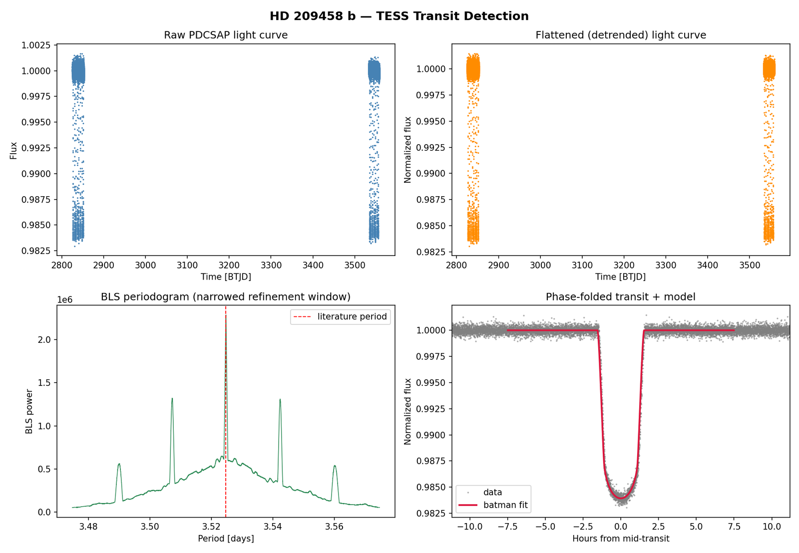
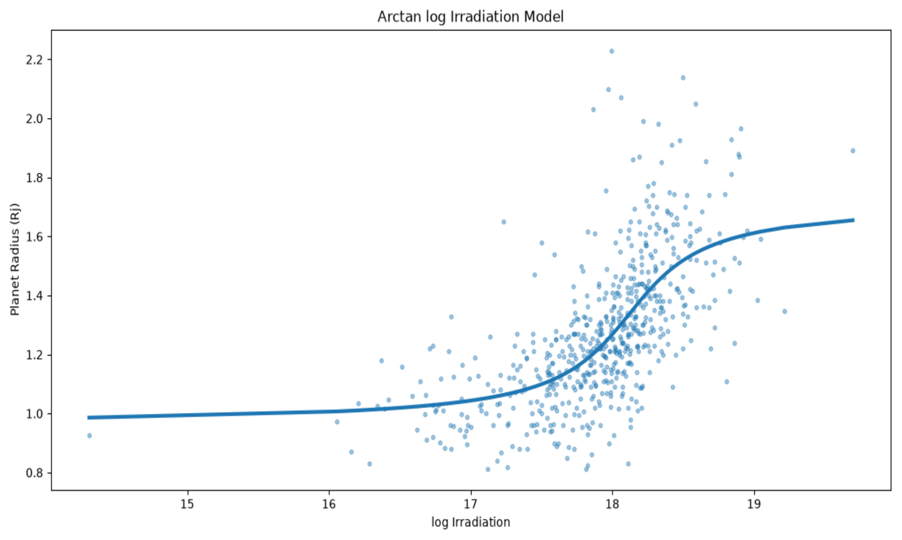

Undergraduate Student, Department of Applied Optics & Photonics, University of Calcutta
Research Intern, School of Earth and Space Exploration, Arizona State University
About Me
Searching the dark for distant pale blue dots
Hi, I'm Somrup Mukherjee! I'm an undergraduate student pursuing a B.Tech in Optics & Optoelectronics Engineering at the Department of Applied Optics & Photonics, University of Calcutta, in Kolkata, India. My interests centre on planetary science and exoplanets, planet and star formation, star–planet interaction, optics, and astronomical instrumentation.
I'm currently a remote research intern at Arizona State University's School of Earth and Space Exploration, where I work on exoplanet atmospheres under Dr. Sagnick Mukherjee. Alongside this, I've built my own pipeline to detect and characterize the hot Jupiter HD 209458 b from TESS data, and I've analysed what drives hot Jupiter radius inflation. You can read about all of these in the Research section.
I'm a recipient of the G.P. Birla Scholarship, and I placed first in an astronomy quiz competition at the University of Calcutta in 2025. I work mainly in Python and C/C++, and I've also used MATLAB and Zemax. I speak English, Bengali and Hindi.
Research
I'm interested in understanding exoplanets from both sides: the observations that reveal them and the physics that shapes them. Here are the projects I've worked on so far.
Exoplanet Atmospheres with JWST Data
Research internship, School of Earth and Space Exploration, Arizona State University (remote). August 2026 – present
I'm working on exoplanet atmospheres with Dr. Sagnick Mukherjee, using data from the James Webb Space Telescope (JWST). The project is planned in stages. I'm starting with the Eureka! pipeline, which turns raw JWST time-series observations into light curves and spectra, and I'm practising on the public WASP-39b example dataset. Next, I'll extract transmission spectra for specific planets, and after that I'll move on to 3D atmospheric modelling.
Detection and Characterization of the Exoplanet HD 209458 b
July – August 2026
HD 209458 b is a well-studied hot Jupiter, and it was the first exoplanet ever seen transiting its star. For this project I built an independent detection pipeline from scratch using publicly available TESS photometry, covering data retrieval, preprocessing, detrending and transit-signal extraction.
I used the Box Least Squares (BLS) method to find the periodic transit signal, then fit a Mandel–Agol transit model to the phase-folded light curve to characterize the system. The orbital period, transit depth, planet-to-star radius ratio, scaled orbital distance and orbital inclination that I recovered agree with independently published literature values to within roughly 1–2%.

Analysis summary for HD 209458 b. Top row: raw and detrended TESS light curves. Bottom left: BLS periodogram near the literature period. Bottom right: phase-folded transit with the fitted transit model.
Hot Jupiter Radius Inflation
Independent project, June 2026
Many hot Jupiters are larger than standard planetary models predict, a puzzle known as radius inflation. In this project I used Python to analyse observational exoplanet datasets and see how planet radius depends on equilibrium temperature and on the stellar irradiation a planet receives. I cleaned and preprocessed the data, studied correlations, and searched for thresholds in the trends.
I then implemented and compared several linear and nonlinear models through statistical fitting, visualization and physical interpretation. Nonlinear models based on the logarithm of stellar irradiation explained the data best. Of the seven models I tested, an arctangent function of log irradiation gave the highest R2 (about 0.44), which suggests that inflation switches on around a threshold in irradiation rather than growing steadily with it.

Hot Jupiter radius versus log stellar irradiation, with the best-fitting arctangent model.
Outreach
I'm the Secretary of the OPTICA (OSA) student chapter at the University of Calcutta, a role I've held since April 2026. We take demonstrations of optical models and theories into schools and colleges, and we organize seminars and events for students.
CV
My CV lists my education, research experience, skills and activities.